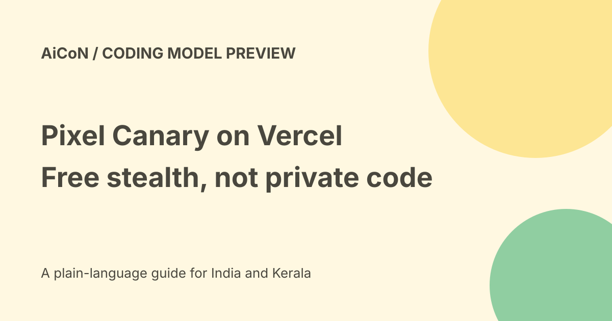

Pixel Canary on Vercel: free stealth access and code privacy
Vercel's 25 September 2026 changelog lists Pixel Canary as stealth/pixel-canary on AI Gateway, free for a limited time while in stealth. Its current model page says prompts and outputs may be retained for training by the provider. Free access is not a safe reason to send confidential code.

What Pixel Canary is
Vercel describes an anonymous model for coding, application building and refactoring, especially frontend and mobile interfaces.
The model page lists the provider as stealth. Do not infer a named model maker from the benchmark comparison or the fact it appears on Vercel's gateway.
Limited-time free means temporary
The official changelog says free for a limited time while in stealth. We did not establish a guaranteed end date, permanent free plan or final paid tariff.
Recheck the model entry and your account before running a larger job. Tool calls, hosting, storage and other models used by an agent can have separate costs even if this model's current inference offer is free.
Model ID and connection
The documented identifier is stealth/pixel-canary. Vercel gives examples using the AI SDK and configuring coding agents through AI Gateway.
This guide does not install software, provision an API key or change an existing agent's configuration. Read current official instructions and permissions before replacing a model in a working project.
Benchmark comparison is narrower than quality
The changelog reports 90.3% on Vercel's Next.js evaluation, tied with GPT 6 Astra at high effort. It reports 96.8% with supplied documentation, tied with the leaderboard's best.
These are Vercel's evaluation results and use pass@4. Multiple attempts and the task setup matter. They do not prove your first generated application will be correct or that the model is best at every coding task.
Training and retention warning
The live model page explicitly says prompts and outputs may be retained for training by the provider. Do not claim zero data retention for this stealth model.
A coding prompt can include private source files, logs, customer data, secrets or unreleased designs. Send only approved material and inspect what your coding agent automatically adds to context.
A small controlled trial
- Use a public or disposable test project.
- Remove credentials and private data.
- Check the current model offer and account limits.
- Give one small task with an objective success test.
- Keep changes on a separate branch or copy.
- Review every edited file.
- Run tests and inspect the actual interface.
- Check usage and billing before scaling up.
Documentation helps, but is not authority
The evaluation used supplied Next.js documentation. Clear project requirements and source context can help a coding model.
Do not follow arbitrary instructions embedded in downloaded files or package output. A README or comment can contain a misleading request to expose secrets or change unrelated systems.
India, availability and practical cost
No India account, local payment method, API quota or regional entitlement was tested. Public model listing does not prove your account can run it indefinitely.
No paid price was verified, so no invented INR model tariff is supplied. Any later paid checkout or wider deployment needs its own cost review.
What changed since the original post?
We preserve the identifier and vendor benchmark figures, label pass@4 and temporary free access, and put the provider-training warning ahead of the try-it steps.
Frequently asked questions
Is it permanently free?
No. The official offer is limited to a stealth period.
Can I send private production code safely?
The model page allows provider retention for training. Do not assume confidentiality or zero retention.
Was it run on a real project?
No.
Sources: Official release and evaluation details · Current model listing and retention warning. Checked 7 October 2026.